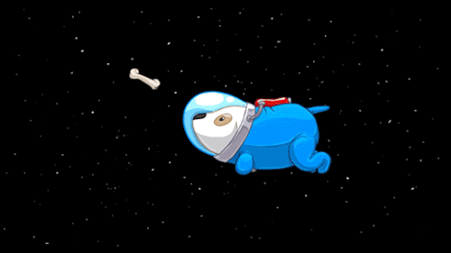

Animales en el Espacio
Los primeros viajes tripulados que se realizaron fuera de la Tierra, los hicieron algunos curiosos animales.
Los primeros viajes tripulados que se realizaron fuera de la Tierra, los hicieron algunos curiosos animales.
La Luna gira alrededor de la Tierra y la Tierra alrededor del Sol, pero ¿Qué pasa cuando se alinean los tres?

Conformamos una pequeña parte del sistema que envuelve a nuestro Sol, ¿Conoces los demás objetos que forman parte de él? ¿Sabes cuánto dura un día en los demás planetas?
Gracias a que las personas de la antiguedad miraban hacía el cielo, hoy podemos conocer las historias mediante las cuales se interpretaban las estrellas
Existen diferentes tipos de galaxias.

Existen diferentes tipos de galaxias.
En México existen diferentes lugares que puedes visitar y adentrarte al maravilloso mundo de la Astronomía. Dentro de los cuales se imparten talleres, charlas, observaciones, etc.